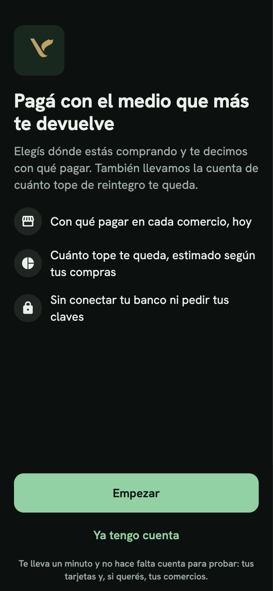
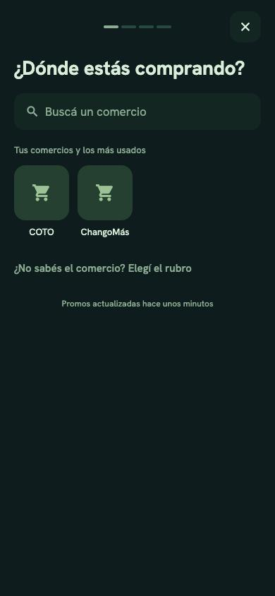
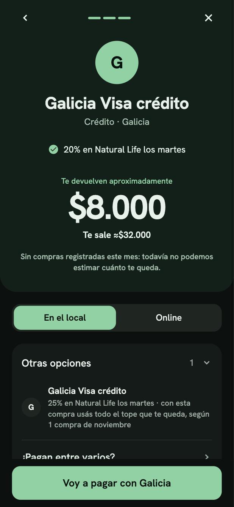
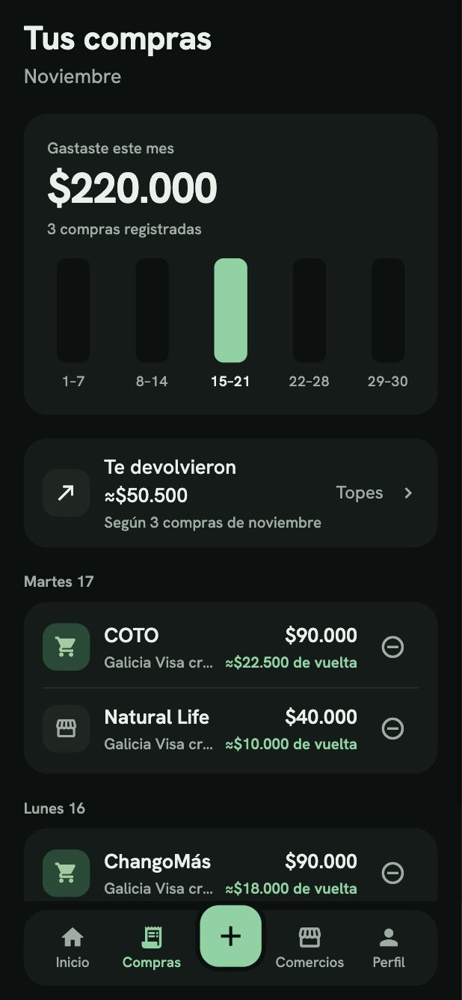
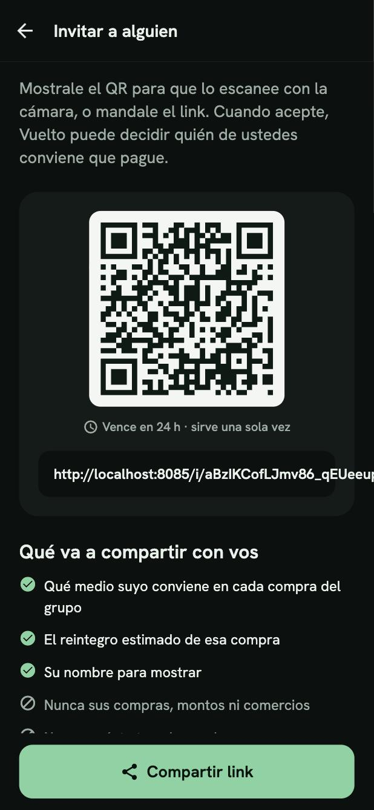
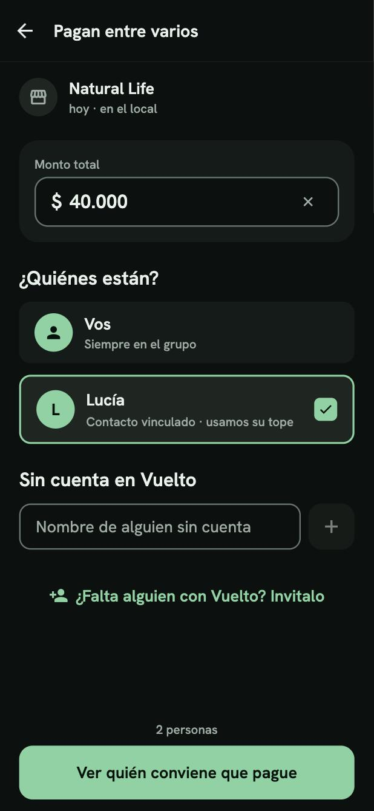

Jesús0:15
Pantallas · empezar y decidir
Se prueba sin cuenta y se decide en cada compra

Empezarsin cuenta

Primera respuestacon tus tarjetas, antes de la cuenta

Iniciolo devuelto y el tope que queda

Comprarcomercio y monto

Recomendaciónmedio, reintegro y por qué

Voy a pagar con…queda por confirmar
La recomendación se calcula en el celular, con código determinístico y sin red. Con la compra anterior, el 20% pasa a convenir más que el 25%: al 25% le queda poco tope.
Jesús0:15
Pantallas · registrar y controlar
La foto del ticket mantiene el tope al día

Escanear ticketcámara o galería

Revisá tu compramonto, comercio y medio

Tus topesestimado, con su base

Mis compraslo registrado en el mes
La foto no se guarda: se lee y se descarta. El medio que dice el ticket es una sugerencia; lo confirma el usuario.
Jesús0:15
Pantallas · gasto en grupo
Entre varios: quién conviene que pague

InvitarQR o link, una sola vez

Armar el grupocontactos y gente sin cuenta

Resultadoquién paga y cuánto pone cada uno
Qué se comparte
- Qué medio del contacto conviene en esa compra y su reintegro estimado.
- No se comparten sus compras ni sus tarjetas.
- Lo calcula una Edge Function con el mismo motor, sin modelo de lenguaje.
Capturas de la verificación con dos cuentas, en modo oscuro.